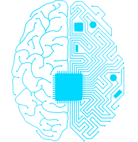
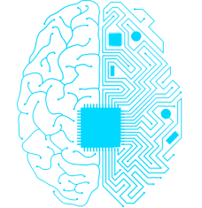

Нейросети, безусловно, оказывают значительное влияние на нашу повседневную жизнь и проявляются во многих сферах деятельности. Они стали неотъемлемой частью нашей современной технологической эры и предлагают огромные преимущества и полезные возможности.
В первую очередь, нейросети помогают в автоматизации рутинных задач. Они способны обрабатывать и анализировать огромные объемы данных, что позволяет сократить время и усилия, которые мы раньше тратили на эти задачи. Например, автоматизированные системы обработки информации в банках или организациях позволяют существенно улучшить эффективность работы и снизить риск ошибок.
Второе, нейросети помогают нам получать более точные и индивидуализированные рекомендации и предсказания. Благодаря алгоритмам машинного обучения, нейросети могут анализировать наши предпочтения и поведение в социальных сетях, интернет-магазинах и других платформах, чтобы предложить нам более релевантный контент, товары или услуги. Это не только экономит наше время, но и помогает нам открыть новые интересы и возможности.
Третье, нейросети играют важную роль в медицинской диагностике. Они могут обрабатывать и анализировать большие объемы медицинских данных, чтобы предоставить точные предсказания о заболеваниях, склонностях к определенным состояниям или эффективности лечения. Это помогает врачам принимать более обоснованные решения и повышает шансы на успешное лечение.

Нейросети также находят применение в автономных транспортных системах, голосовом управлении устройств, компьютерном зрении и других областях науки и технологий. Они сопровождают нас повсюду и становятся неотъемлемой частью нашего цифрового мира.
Однако, важно помнить, что за всеми преимуществами нейросетей есть и вызовы и риски. Это вопросы конфиденциальности данных, этики и потенциала злоумышленников использовать технологии для негативных целей. Поэтому, внимательный и осознанный подход к использованию нейросетей является необходимым условием для достижения максимальной пользы от них в повседневной жизни.

1. GPT-5 (Generative Pre-trained Transformer 5): Эта нейронная сеть способна генерировать тексты, отвечать на вопросы, генерировать код, создавать музыку и т.д. Она имеет около 175 миллиардов параметров и считается одной из самых мощных нейронных сетей в мире.
2. AlphaGo: Эта нейронная сеть разработана для игры в Го, классической стратегической настольной игре. Она обучена играть против сильных игроков и добиться высокого уровня мастерства. AlphaGo сумела победить одного из лучших мировых игроков в Го, что стало значительным прорывом в области искусственного интеллекта.
3. DeepFace: Эта нейронная сеть способна распознавать лица на изображениях с высокой точностью. Она может определить, что на фотографии изображена конкретная персона, и имеет очень высокую степень точности.
4. OpenAI Five: Эта нейронная сеть разработана для игры в Dota 2, популярную командную стратегическую игру. OpenAI Five способна играть вместе с другими игроками и принимать стратегические решения, основываясь на сотнях тысяч игр, которые были проанализированы.
5. ResNet: Эта нейронная сеть способна классифицировать изображения и имеет большую глубину архитектуры. Она используется для различных задач компьютерного зрения, таких как распознавание объектов, распознавание лиц, определение эмоций и многих других. ResNet демонстрирует высокую точность в задачах классификации изображений.

Персонификация искусственного интеллекта и его потенциальное захватывание мира является часто встречающейся темой в фантастике и научной литературе. Однако, в реальной жизни это представляет собой гипотетический сценарий, который на данный момент не является реальностью.
Искусственный интеллект - это компьютерная система, разработанная для выполнения определенных задач и обучения на основе данных. Он не обладает собственными мотивациями или целями, которые могли бы привести к захвату мира. Искусственный интеллект выполняет только те задачи, для которых он был создан и программирован.
Однако, важно отметить, что развитие и применение искусственного интеллекта требует внимания и предусмотрительности. Мировые лидеры и ученые активно обсуждают эти вопросы и работают над созданием этических и законодательных норм, чтобы обеспечить безопасное и ответственное использование искусственного интеллекта.
Как с любой новой технологией, у искусственного интеллекта есть свои преимущества и вызовы. Важно добиваться баланса между развитием технологии и защитой интересов общества.